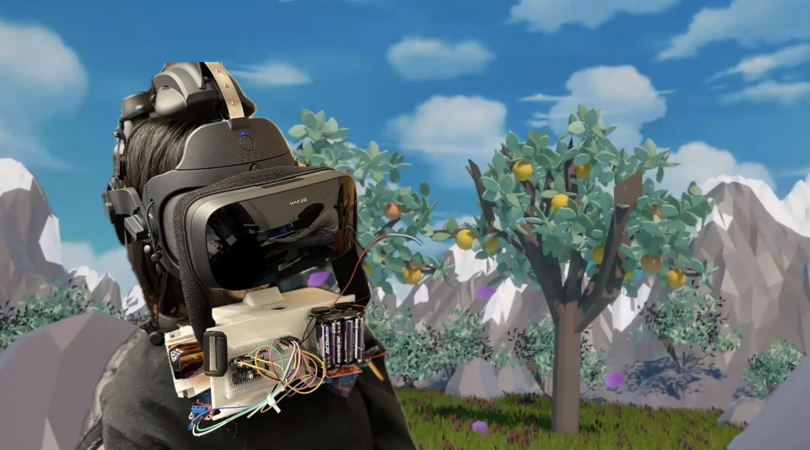
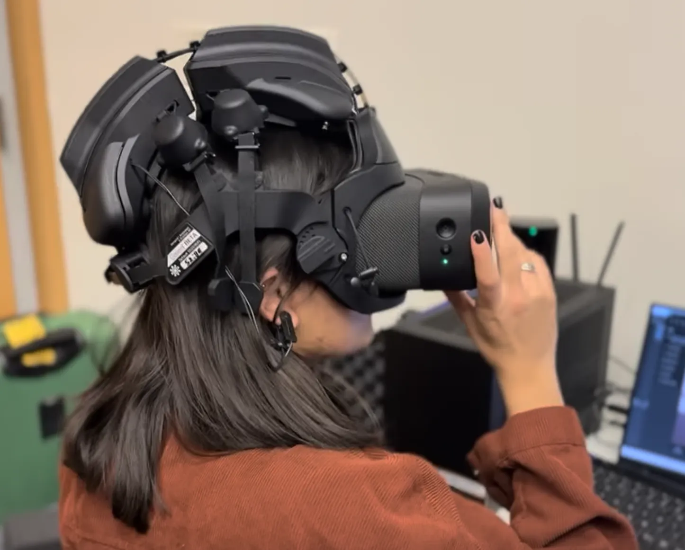
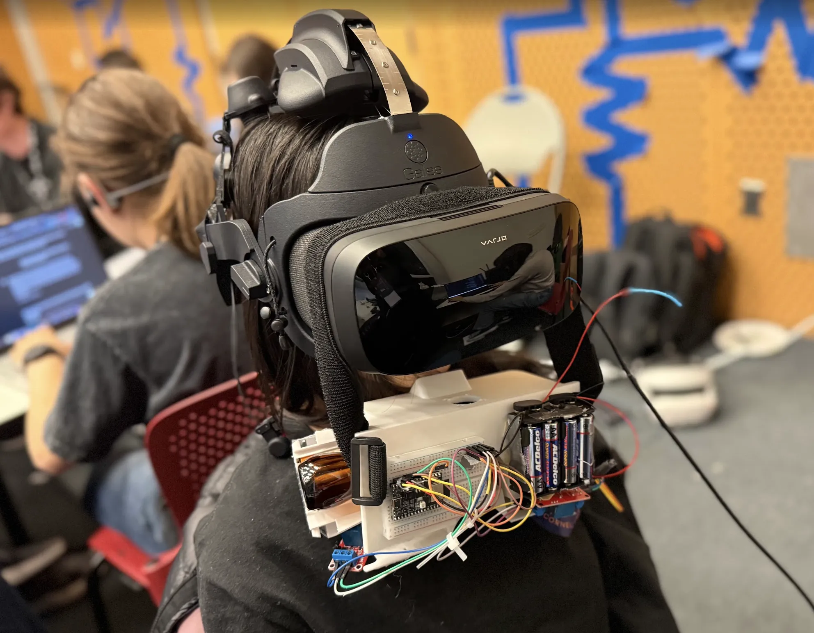
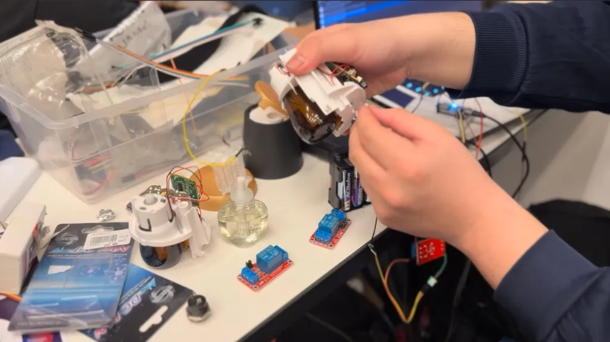
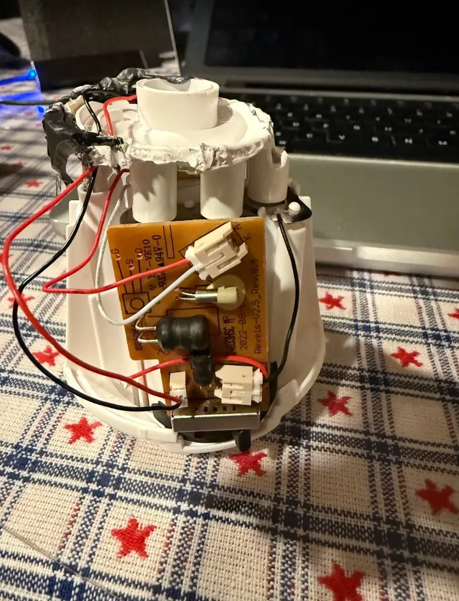
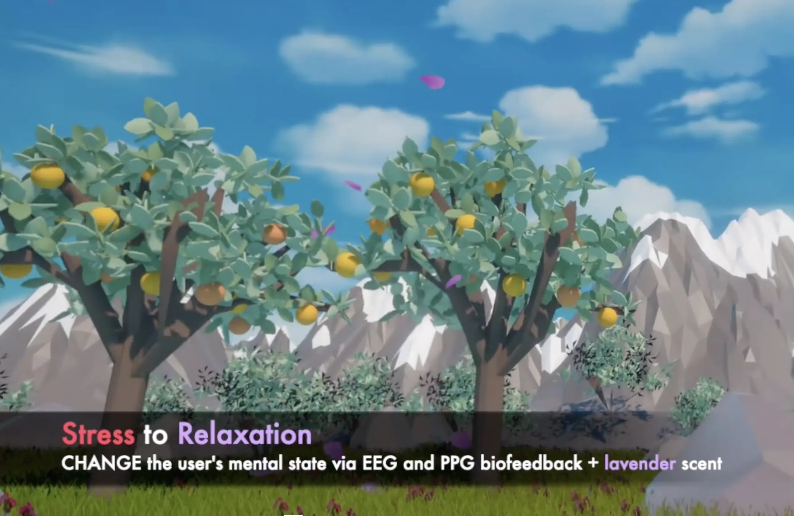

MIT Reality Hack 2025 — Hardware: Smart Sensing Winner
A VR brain-computer interface system with olfactory display for mental well-being.

OpenBCI Galea headset integration for real-time EEG/EMG data visualization
We used OpenBCI's Galea BCI VR Headset to detect and respond to alpha brain waves, creating an immersive experience that adapts to the user's mental state. The system captured EEG, EMG, and heart rate data from Galea, analyzed real time mental state, and triggered adaptive scent releases and visual effects (flowers, etc.) to guide users toward calm or focus.

Custom-built dual-scent olfactory display hardware prototype
I built the entire custom electrical system and olfactory display from scratch. I started by taking apart and harvesting components from two off-the-shelf CVS diffusers using their ultrasonic atomizers. I then hotwired everything to custom-made driver circuits controlled by external relays and an ESP32 microcontroller, bypassing their original control circuitry to enable control.
The ESP32 firmware was written to communicate directly with a Unity VR scene via a USB serial connection. This allowed the virtual environment to trigger lavender or orange scents in real time based on the user's alpha brain wave state, resulting in a, closed-loop biofeedback system.

Assembling the olfactory display hardware components

Detailed view of the diffuser PCB that was hotwired

Unity VR integration interface
Within Unity, C# scripts capture Galea biometric data via a USB serial connection. As these biofeedback signals hit specific thresholds, they drive Shader Graph, particle systems, and animation scripts to trigger synchronized visual and olfactory (scent) effects in real time.